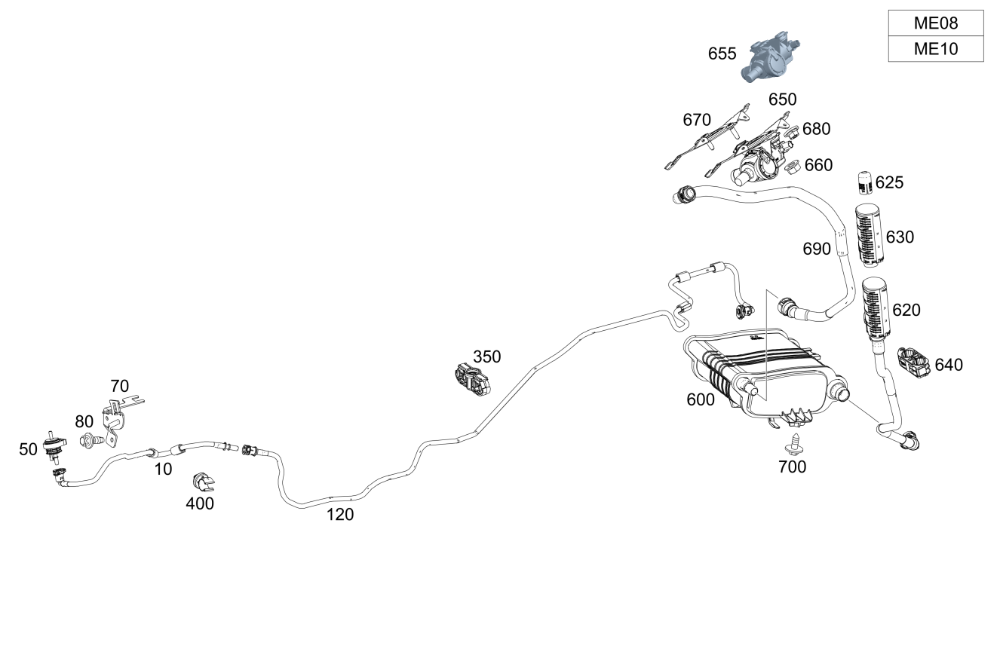

| № | Артикул | Название | Кол. | Примечание |
|---|---|---|---|---|
| 10 | A 247 470 56 01 | Трубопровод регенерации (PURGE LINE) | 1 | Разъем к двигателю |
| 10 | A 247 470 22 04 | Трубопровод регенерации (PURGE LINE) | 1 | Разъем к двигателю |
| 10 | A 247 470 22 04 | Трубопровод регенерации (PURGE LINE) | 1 | Разъем к двигателю |
| 10 | A 177 470 70 00 | Трубопровод регенерации (PURGE LINE) | 1 | Разъем к двигателю |
| 10 | A 247 470 23 03 | Трубопровод регенерации (PURGE LINE) | 1 | Разъем к двигателю |
| 20 | A 000 995 66 65 | Проставочный элемент (SPACER) | 1 | Трубопровод регенерации к двигателю |
| 50 | A 001 470 09 93 | Клапан вентиляции бака (PURGE VALVE) | 1 | |
| 50 | A 000 470 37 00 | Клапан вентиляции бака (PURGE VALVE) | 1 | |
| 50 | A 000 470 37 00 | Клапан вентиляции бака (PURGE VALVE) | 1 | |
| 50 | A 000 470 37 00 | Клапан вентиляции бака (PURGE VALVE) | 1 | |
| 50 | A 000 470 49 01 | Клапан вентиляции бака (PURGE VALVE) | 1 | |
| 70 | A 247 476 08 00 | Держатель (HOLDER) | 1 | Клапан системы замкнутой вентиляции топливного бака |
| 70 | A 247 476 08 00 | Держатель (HOLDER) | 1 | Клапан системы замкнутой вентиляции топливного бака |
| 80 | N 910143 006000 | Винт с 6-гр. глвк (HEXALOBULAR SCREW) | 1 | Крепление держателя клапана регенерации; M6X12 |
| 80 | N 910143 006000 | Винт с 6-гр. глвк (HEXALOBULAR SCREW) | 1 | Крепление держателя клапана регенерации; M6X12 |
| 120 | A 247 470 02 64 | Трубопровод регенерации (PURGE LINE) | 1 | |
| 120 | A 247 470 06 04 | Трубопровод регенерации (PURGE LINE) | 1 | |
| 120 | A 247 470 06 04 | Трубопровод регенерации (PURGE LINE) | 1 | |
| 120 | A 247 470 06 04 | Трубопровод регенерации (PURGE LINE) | 1 | |
| 120 | A 247 470 71 04 | Трубопровод регенерации (PURGE LINE) | 1 | |
| 120 | A 247 470 71 04 | Трубопровод регенерации (PURGE LINE) | 1 | |
| 120 | A 247 470 71 04 | Трубопровод регенерации (PURGE LINE) | 1 | |
| 120 | A 247 470 71 04 | Трубопровод регенерации (PURGE LINE) | 1 | |
| 120 | A 247 470 79 02 | Трубопровод регенерации (PURGE LINE) | 1 | |
| 120 | A 247 470 79 02 | Трубопровод регенерации (PURGE LINE) | 1 | |
| 120 | A 247 470 79 02 | Трубопровод регенерации (PURGE LINE) | 1 | |
| 120 | A 247 470 79 02 | Трубопровод регенерации (PURGE LINE) | 1 | |
| 120 | A 247 470 09 04 | Трубопровод регенерации (PURGE LINE) | 1 | |
| 120 | A 247 470 09 04 | Трубопровод регенерации (PURGE LINE) | 1 | |
| 120 | A 247 470 09 04 | Трубопровод регенерации (PURGE LINE) | 1 | |
| 140 | A 247 470 07 64 | Трубопровод регенерации (PURGE LINE) | 1 | Разъем к фильтру |
| 140 | A 247 470 90 03 | Трубопровод регенерации (PURGE LINE) | 1 | Разъем к фильтру |
| 160 | A 247 470 00 59 | Фильтр с акт. углем (ACTIVATED CHARCOAL FILTER) | 1 | |
| 160 | A 247 470 01 59 | Фильтр с акт. углем (ACTIVATED CHARCOAL FILTER) | 1 | |
| 160 | A 247 470 00 59 | Фильтр с акт. углем (ACTIVATED CHARCOAL FILTER) | 1 | |
| 160 | A 247 470 01 59 | Фильтр с акт. углем (ACTIVATED CHARCOAL FILTER) | 1 | |
| 160 | A 247 470 16 04 | Фильтр с акт. углем (ACTIVATED CHARCOAL FILTER) | 1 | |
| 160 | A 247 470 16 04 | Фильтр с акт. углем (ACTIVATED CHARCOAL FILTER) | 1 | |
| 170 | A 247 470 16 02 | Вентиляционный трубопр. (BLEED LINE) | 1 | Угольный фильтр к топливному баку |
| 180 | A 247 470 07 00 | Вентиляционный трубопр. (BLEED LINE) | 1 | К угольному фильтру |
| 180 | A 247 470 07 00 | Вентиляционный трубопр. (BLEED LINE) | 1 | К угольному фильтру |
| 180 | A 247 470 83 02 | Вентиляционный трубопр. (BLEED LINE) | 1 | К угольному фильтру |
| 200 | A 247 470 92 01 | Фильтр с акт. углем (ACTIVATED CHARCOAL FILTER) | 1 | |
| 200 | A 247 470 34 03 | Фильтр с акт. углем (ACTIVATED CHARCOAL FILTER) | 1 | |
| 210 | A 001 545 75 16 | - Устройство пров.гер.бака (DIAGN. DEV., TANK LEAKAGE) | 1 | |
| 210 | A 000 545 01 41 | - Тестер герметичности бака (DIAGNOSTIC DEVICE) | 1 | |
| 210 | A 000 545 01 41 | - Тестер герметичности бака (DIAGNOSTIC DEVICE) | 1 | |
| 220 | A 001 984 64 29 | - Болт с головкой торкс (HEXALOBULAR BOLT) | 3 | Диагностическое устройство к держателю; 5X16 |
| 230 | A 000 471 01 50 | - Направляющая втулка (PILOT BUSHING) | 3 | Крепление диагностического прибора |
| 240 | A 000 997 31 81 | - Проходная втулка (FEED-THROUGH GROMMET) | 3 | Крепление диагностического прибора |
| 250 | A 247 470 06 00 | Вентиляционный трубопр. (BLEED LINE) | 1 | К угольному фильтру |
| 250 | A 247 470 83 02 | Вентиляционный трубопр. (BLEED LINE) | 1 | К угольному фильтру |
| 260 | A 000 476 03 00 | - Воздушный фильтр (AIR FILTER) | 1 | К приточному воздуховоду |
| 260 | A 001 998 29 23 | - Защитный колпачок (PROTECTIVE CAP) | 1 | К приточному воздуховоду |
| 350 | A 000 995 08 00 | Крепеж (трубо)провода (LINE FASTENER) | 1 | Крепление топливопровода |
| 350 | A 000 995 08 00 | Крепеж (трубо)провода (LINE FASTENER) | 1 | Крепление топливопровода |
| 350 | A 000 995 08 00 | Крепеж (трубо)провода (LINE FASTENER) | 6 | Крепление топливопровода |
| 350 | A 000 995 08 00 | Крепеж (трубо)провода (LINE FASTENER) | 5 | Крепление топливопровода |
| 350 | A 000 995 08 00 | Крепеж (трубо)провода (LINE FASTENER) | 5 | Крепление топливопровода |
| 350 | A 000 995 08 00 | Крепеж (трубо)провода (LINE FASTENER) | 5 | Крепление топливопровода |
| 350 | A 000 995 26 04 | Крепеж (трубо)провода (LINE FASTENER) | 5 | Крепление топливопровода |
| 350 | A 000 995 08 00 | Крепеж (трубо)провода (LINE FASTENER) | 6 | Крепление топливопровода |
| 350 | A 000 995 08 00 | Крепеж (трубо)провода (LINE FASTENER) | 5 | Крепление топливопровода |
| 350 | A 000 995 08 00 | Крепеж (трубо)провода (LINE FASTENER) | 5 | Крепление топливопровода |
| 400 | A 001 995 93 77 | Держатель трубопровода (LINE BRACKET) | 2 | Трубопровод регенерации к двигателю |
| 400 | A 000 995 41 14 | Держатель (HOLDER) | 1 | Трубопровод регенерации к двигателю |
| 600 | A 177 470 53 00 | Фильтр с акт. углем (ACTIVATED CHARCOAL FILTER) | 1 | |
| 600 | A 177 470 01 01 | Фильтр с акт. углем (ACTIVATED CHARCOAL FILTER) | 1 | |
| 620 | A 177 470 51 00 | Вентиляционный трубопр. (BLEED LINE) | 1 | К угольному фильтру |
| 620 | A 177 470 51 00 | Вентиляционный трубопр. (BLEED LINE) | 1 | К угольному фильтру |
| 620 | A 177 470 51 00 | Вентиляционный трубопр. (BLEED LINE) | 1 | К угольному фильтру |
| 620 | A 177 470 58 00 | Вентиляционный трубопр. (BLEED LINE) | 1 | К угольному фильтру |
| 625 | A 001 998 29 23 | - Защитный колпачок (PROTECTIVE CAP) | 1 | К приточному воздуховоду |
| 625 | A 001 998 29 23 | - Защитный колпачок (PROTECTIVE CAP) | 1 | К приточному воздуховоду |
| 630 | A 000 476 13 00 | - Воздушный фильтр (AIR FILTER) | 1 | К приточному воздуховоду |
| 640 | A 000 995 91 00 | Крепеж (трубо)провода (LINE FASTENER) | 1 | Крепление вентиляционной трубки |
| 650 | A 247 470 36 02 | Запорный клапан (CUTOFF VALVE) | 1 | Угольный фильтр |
| 655 | A 000 470 02 00 | - Запорный клапан (CUTOFF VALVE) | 1 | Угольный фильтр |
| 660 | N 000000 008303 | - Шестигранная гайка (HEXAGON NUT) | 2 | Запорный клапан к кронштейну; M8 |
| 670 | A 247 476 21 00 | - Держатель (HOLDER) | 1 | Запорный клапан |
| 680 | N 000000 008293 | ГАЙКА КОМБИНИРОВАННАЯ (NUT-AND-WASHER ASSEMBLY) | 2 | Крепление кронштейна запорного клапана; M6 |
| 690 | A 177 470 57 00 | Топливопровод (FUEL LINE) | 1 | Угольный фильтр к запорный клапану |
| 700 | N 000000 008590 | Винт с 6-гранной головкой (HEXAGON HEAD BOLT) | 1 | Крепление угольного фильтра; 6X16 |
| 700 | N 000000 008590 | Винт с 6-гранной головкой (HEXAGON HEAD BOLT) | 1 | Крепление угольного фильтра; 6X16 |
Позиций: 84 · подписано на схемах: 84 · колесо — плавный зум в курсор, перетаскивание — пан, двойной клик — зум, клик по артикулу — скопировать.